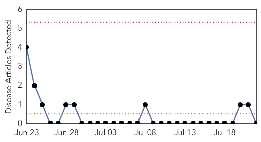
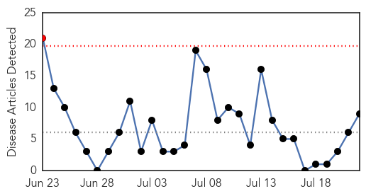
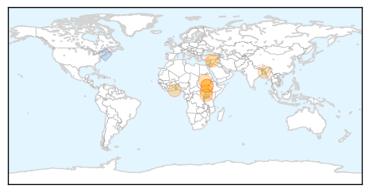

Bubonic Plague
30-Day Web Trend
0 alerts, 0 warnings

30-Day Twitter Trend
0 alerts, 0 warnings

Article Locations

Article Confidences

Top Articles:
-
No articles found for Jul 22, 2015
Top Tweets:
-
No tweets found for Jul 22, 2015
Cholera
30-Day Web Trend
1 alerts, 0 warnings

30-Day Twitter Trend
5 alerts, 0 warnings

Article Locations
Article Confidences

Top Articles:
- 0.973
- UN relief chief heads to South Sudan to bolster humanitarian response
- 0.969
- UN relief chief heads to South Sudan to bolster humanitarian response as country challenges mount
- 0.946
- Over 1,000 cholera cases reported in South Sudan: WHO - Xinhua
- 0.942
- Cholera outbreak in South Sudan: WHO
- 0.919
- Cholera outbreak in South Sudan
- 0.865
- Macbells Supports La Hospital …To Fight Cholera
- 0.764
- Water not safe for urban people
- 0.695
- Water cuts threaten 500,000 people in Aleppo
- 0.618
- News in Brief 21 July 2015 (PM)
Top Tweets:
- 0.691
- RT: .@RedCross response to [@UN cholera] epidemic was too slow especially for a relief and emergency response org. https://t…